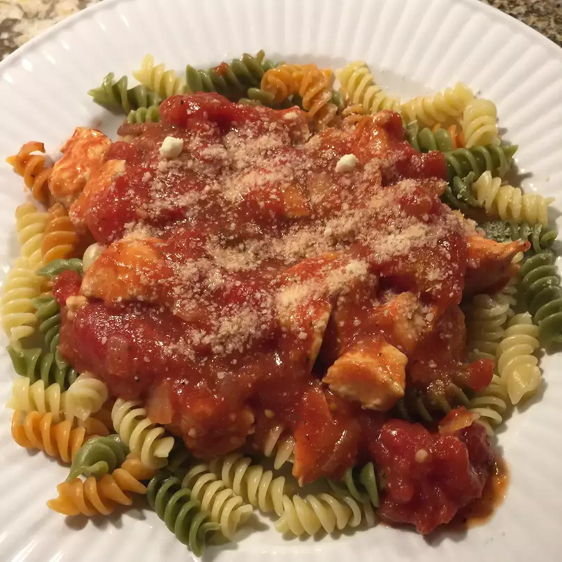

Home
Chicken Bolognaise Recipe

Description
Chicken Bolognaise is much like the classic beef bolognaise but rather than using minced red meat substitutes chicken in a lovely marinara sauce.
Ingredients
- 1 tablespoon Vegetable Oil
- 3 Cubed Chicken Breasts
- 1 White Onion, chopped
- 2 Cloves of garlic, finely chopped
- 1 Can of Peeled and Crushed Tomatoes
- 4 Button Mushrooms, Chopped
- 1/2 teaspoon suger
- 1/2 a teaspoon mixed herbs
- 4 cups uncooked pasta of choice
Steps
- Heat oil in skillet
- Fry chopped onion
- Fry chicken, garlic and mushrooms together until chicken is mostly cooked
- Add can of crushed Tomatoes
- Allow to simmer
- Add sugar and herbs
- Add pasta
- Cook for about 5 minutes
- Add salt and pepper to taste